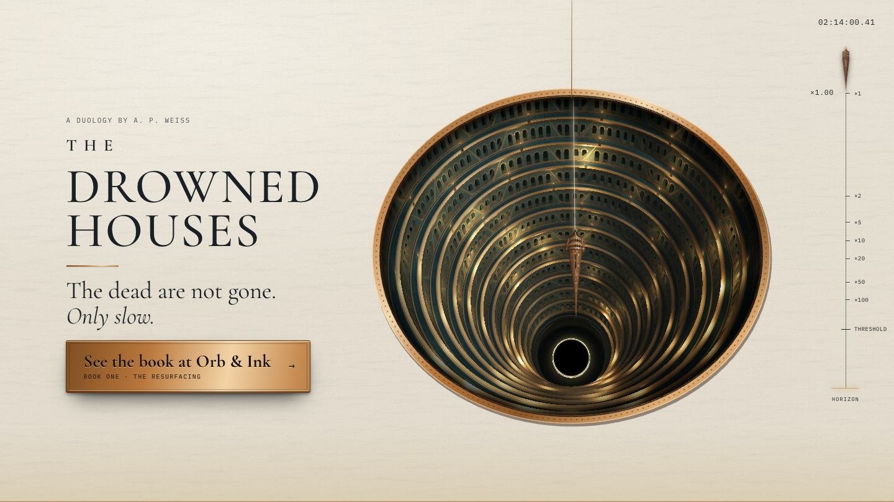
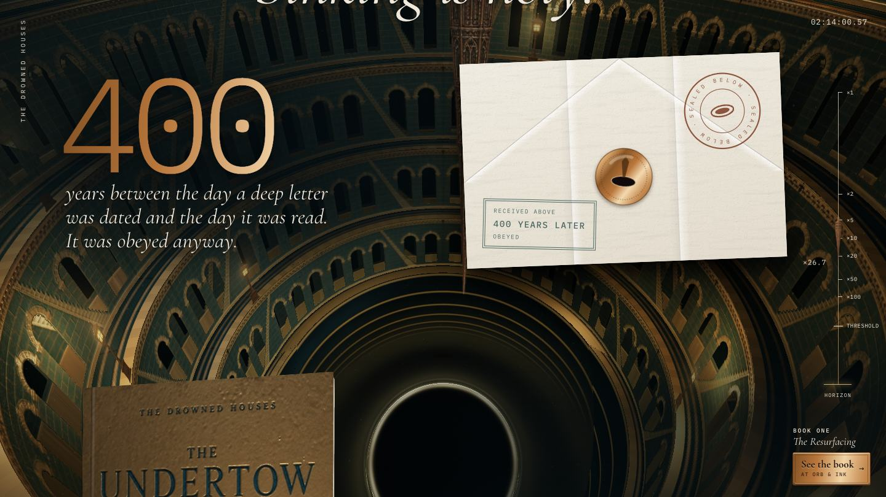
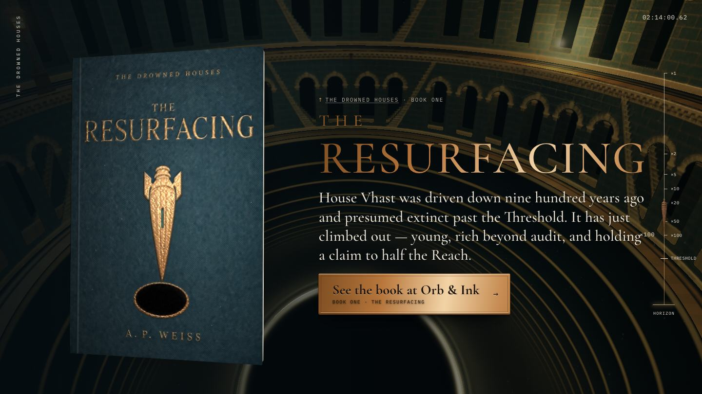

The Resurfacing
Le grandi casate non muoiono. Sprofondano — e governano la superficie da secoli più in basso.
I morti non se ne sono andati. Sono soltanto lenti.


Attorno a un buco nero chiamato il Pozzo, le grandi casate non muoiono — sprofondano, e governano i discendenti da secoli più in basso con istruzioni che arrivano in ritardo di generazioni.



The Drowned HousesEsplora questo mondo2 libri
The Drowned Houses
A. P. Weiss
Apri il libro — il mondo è dentro.
Sfoglia lo scaffale · 43